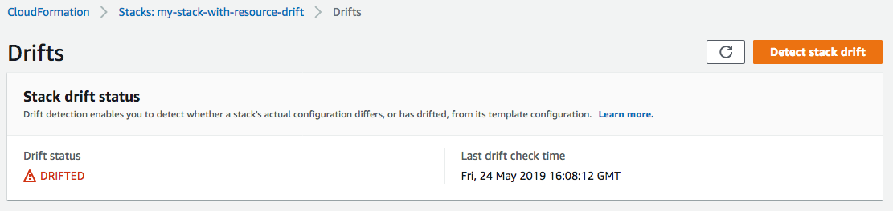

Detección de desviaciones en una pila de CloudFormation completa
La realización de una operación de detección de desviaciones en una pila determina si la pila se ha desviado de su configuración de plantilla prevista y permite devolver información detallada sobre el estado de la desviación de cada recurso de la pila que admite la detección de desviaciones.
Para detectar desviaciones en una pila completa con la AWS Management Console
Abra la consola de AWS CloudFormation en https://console.aws.amazon.com/cloudformation
. -
En la lista de pilas, seleccione la pila en la que desea detectar desviaciones. En el panel de detalles de la pila, elija Stack actions (Acciones de pila) y, a continuación, seleccione Detect drift (Detectar desviación).

CloudFormation muestra una barra de información que indica que se ha iniciado la detección de desviaciones en la pila seleccionada.
-
Espere hasta que CloudFormation complete la operación de detección de desviaciones. Cuando la operación de detección de desviaciones finaliza, CloudFormation actualiza Drift status (Estado de desviaciones) y Last drift check time (Último momento de comprobación de desviaciones) para la pila. Estos campos se enumeran en la sección Overview (Información general) del panel Stack info (Información de pila) de la página de detalles de pila.
La operación de detección de desviaciones puede tardar varios minutos, según la cantidad de recursos que contiene la pila. Solo puede ejecutar una única operación de detección de desviaciones en una pila determinada al mismo tiempo. CloudFormation continúa con la operación de detección de desviaciones incluso después de cerrar la barra de información.
-
Revise los resultados de la detección de desviaciones de la pila y sus recursos. Con la pila seleccionada, desde el menú desviaciones de acciones Stack actions (Acciones de pila), seleccione View drift results (Ver resultados de desviaciones).
CloudFormation muestra el estado de las desviaciones en general de la pila, además de la última vez en que se inició la detección de desviaciones en la pila o en cualquiera de sus recursos individuales. Se considera que una pila se ha desviado si uno o varios de sus recursos se han desviado.
En la sección Resource drift details (Detalles de las desviaciones de recursos), CloudFormation genera una lista de cada recurso de pila, su estado de desviación y la última vez que se inició la detección de desviaciones en ese recurso. El ID lógico y el ID físico de cada recurso se muestra para ayudarle a identificarlos. Además, en el caso de los recursos con el estado MODIFIED, CloudFormation muestra los detalles de la desviación del recurso.
Puede ordenar los recursos en función de su estado mediante la columna Drift status (Estado de desviación ).
-
Para ver los detalles en un recurso modificado.
-
Con el recurso modificado seleccionado, elija View drift details (Ver detalles de desviación).
CloudFormation muestra la página de detalles de desviación de ese recurso. La página muestra los valores de propiedades actuales y previstos del recurso, así como las diferencias entre los dos.
Para resaltar una diferencia, en la sección Differences (Diferencias), seleccione el nombre de la propiedad.
-
Las propiedades agregadas se resaltan en verde en la columna Current (Actual) de la sección Details (Detalles).
-
Las propiedades eliminadas están marcadas en rojo en la columna Expected (Previsto) de la sección Details (Detalles).
-
Las propiedades cuyo valor ha cambiado aparecen resaltadas en amarillo en las columnas Previsto y Current (Actual).
-
-

-
Para detectar desviaciones en una pila completa con la AWS CLI
Para detectar desviaciones en una pila completa a través de la AWS CLI, utilice los siguientes comandos de aws
cloudformation:
-
detect-stack-driftpara iniciar una operación de detección de desviaciones en una pila. -
describe-stack-drift-detection-statuspara monitorizar el estado de operación de detección de desviaciones de la pila. -
describe-stack-resource-driftspara revisar los detalles de la operación de detección de desviaciones de la pila.
-
Use la
detect-stack-driftpara detectar desviaciones en una pila completa. Especifique el nombre de pila o ARN. También puede especificar los ID lógicos de los recursos específicos que desee utilizar como filtros para esta operación de detección de desviaciones de filtros.$aws cloudformation detect-stack-drift --stack-namemy-stack-with-resource-drift{ "StackDriftDetectionId": "624af370-311a-11e8-b6b7-500cexample" } -
Debido a que las operaciones de detección de desviaciones de pila pueden mantenerse durante mucho tiempo, utilice
describe-stack-drift-detection-statuspara monitorizar el estado de operación de desviaciones. Este comando toma el ID de detección de desviaciones de la pila que el comandodetect-stack-driftdevuelve.En el ejemplo siguiente hemos tomado el ID de detección de desviaciones de la pila devuelto por el ejemplo de
detect-stack-driftanterior y lo hemos transferido adescribe-stack-drift-detection-status. El parámetro devuelve detalles de operación que muestran que la operación de detección de desviaciones se ha completado, un solo recurso de la pila se ha desviado y que, por tanto, se considera que toda la pila se ha desviado.$aws cloudformation describe-stack-drift-detection-status --stack-drift-detection-id624af370-311a-11e8-b6b7-500cexample{ "StackId": "arn:aws:cloudformation:us-east-1:099908667365:stack/my-stack-with-resource-drift/489e5570-df85-11e7-a7d9-50example", "StackDriftDetectionId": "624af370-311a-11e8-b6b7-500cexample", "StackDriftStatus": "DRIFTED", "Timestamp": "2018-03-26T17:23:22.279Z", "DetectionStatus": "DETECTION_COMPLETE", "DriftedStackResourceCount": 1 } -
Cuando la operación de detección de desviaciones de la pila se haya completado, utilice el comando
describe-stack-resource-driftspara revisar los resultados, incluidos los valores de propiedades reales y previstos para los recursos que se han desviado.En el ejemplo siguiente se utiliza el parámetro
stack-resource-drift-status-filterspara información sobre las desviaciones de solicitudes para los recursos que se han modificado o se han eliminado. La solicitud devuelve información sobre el recurso que se ha modificado, como los detalles sobre dos de sus propiedades cuyos valores se han cambiado. No se ha eliminado ningún recurso.$aws cloudformation describe-stack-resource-drifts --stack-namemy-stack-with-resource-drift--stack-resource-drift-status-filters MODIFIED DELETED{ "StackResourceDrifts": [ { "StackId": "arn:aws:cloudformation:us-east-1:099908667365:stack/my-stack-with-resource-drift/489e5570-df85-11e7-a7d9-50example", "ActualProperties": "{\"ReceiveMessageWaitTimeSeconds\":0,\"DelaySeconds\":120,\"RedrivePolicy\":{\"deadLetterTargetArn\":\"arn:aws:sqs:us-east-1:099908667365:my-stack-with-resource-drift-DLQ-1BCY7HHD5QIM3\",\"maxReceiveCount\":12},\"MessageRetentionPeriod\":345600,\"MaximumMessageSize\":262144,\"VisibilityTimeout\":60,\"QueueName\":\"my-stack-with-resource-drift-Queue-494PBHCO76H4\"}", "ResourceType": "AWS::SQS::Queue", "Timestamp": "2018-03-26T17:23:34.489Z", "PhysicalResourceId": "https://sqs.us-east-1.amazonaws.com/099908667365/my-stack-with-resource-drift-Queue-494PBHCO76H4", "StackResourceDriftStatus": "MODIFIED", "ExpectedProperties": "{\"ReceiveMessageWaitTimeSeconds\":0,\"DelaySeconds\":20,\"RedrivePolicy\":{\"deadLetterTargetArn\":\"arn:aws:sqs:us-east-1:099908667365:my-stack-with-resource-drift-DLQ-1BCY7HHD5QIM3\",\"maxReceiveCount\":10},\"MessageRetentionPeriod\":345600,\"MaximumMessageSize\":262144,\"VisibilityTimeout\":60,\"QueueName\":\"my-stack-with-resource-drift-Queue-494PBHCO76H4\"}", "PropertyDifferences": [ { "PropertyPath": "/DelaySeconds", "ActualValue": "120", "ExpectedValue": "20", "DifferenceType": "NOT_EQUAL" }, { "PropertyPath": "/RedrivePolicy/maxReceiveCount", "ActualValue": "12", "ExpectedValue": "10", "DifferenceType": "NOT_EQUAL" } ], "LogicalResourceId": "Queue" } ] }